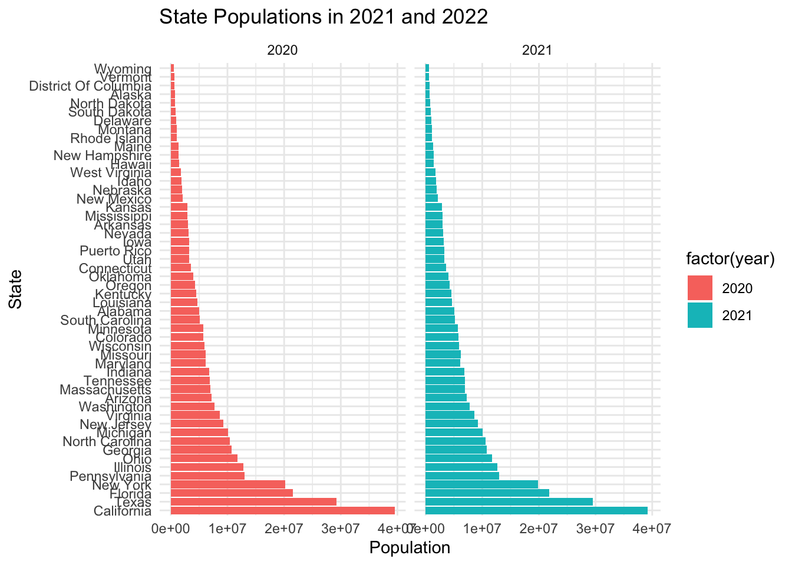
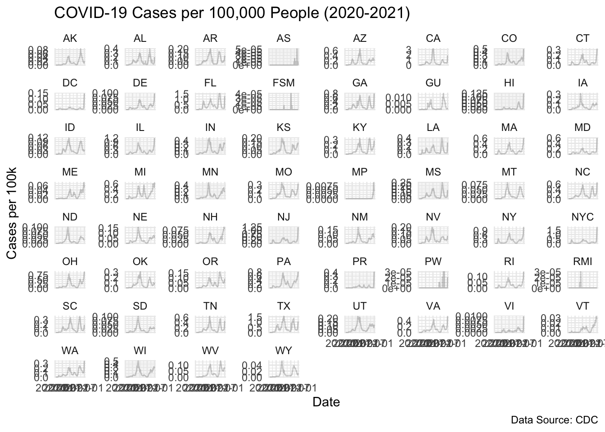

source("census-key.R")Problem set 3
Max points: 12.
In the next problem set, we plan to explore the relationship between COVID-19 death rates and vaccination rates across US states by visually examining their correlation. This analysis will involve gathering COVID-19 related data from the CDC’s API and then extensively processing it to merge the various datasets. Since the population sizes of states vary significantly, we will focus on comparing rates rather than absolute numbers. To facilitate this, we will also source population data from the US Census to accurately calculate these rates.
In this problem set we will learn how to extract and wrangle data from the data US Census and CDC APIs.
All answers should be submitted in pset-03-wrangling.qmd. Be sure to include a rendered version of your file and a raw code file that successfully would render on a new computer.
- (1 point) Get an API key from the US Census at https://api.census.gov/data/key_signup.html. You can’t share this public key. But your code has to run on a TFs computer. Assume the TF will have a file in their working directory (i.e. in the
BIOSTAT620_pset_sol/p3/directory, assuming that you placepset-03-wrangling.qmdin theBIOSTAT620_pset_sol/p3/folder) namedcensus-key.Rwith the following one line of code:
census_key <- "A_CENSUS_KEY_THAT_WORKS"Write a first line of code for your problem set that defines census_key by running the code in the file census-key.R.
- (1 point) The US Census API User Guide provides details on how to leverage this valuable resource. We are interested in vintage population estimates for years 2021 and 2022. From the documentation we find that the endpoint is:
url <- "https://api.census.gov/data/2021/pep/population"Use the httr2 package to construct the following GET request.
https://api.census.gov/data/2021/pep/population?get=POP_2020,POP_2021,NAME&for=state:*&key=YOURKEYHERECreate an object called request of class httr2_request with this URL as an endpoint. Print out request to check that the URL matches what we want.
library(httr2)
url <- "https://api.census.gov/data/2021/pep/population"
request <- request(url) |>
req_url_query(get = "POP_2020,POP_2021,NAME",
'for' = "state:*",
key = census_key)
response <- request |>
req_perform() |>
resp_body_json()
print(response)[[1]]
[[1]][[1]]
[1] "POP_2020"
[[1]][[2]]
[1] "POP_2021"
[[1]][[3]]
[1] "NAME"
[[1]][[4]]
[1] "state"
[[2]]
[[2]][[1]]
[1] "3962031"
[[2]][[2]]
[1] "3986639"
[[2]][[3]]
[1] "Oklahoma"
[[2]][[4]]
[1] "40"
[[3]]
[[3]][[1]]
[1] "1961455"
[[3]][[2]]
[1] "1963692"
[[3]][[3]]
[1] "Nebraska"
[[3]][[4]]
[1] "31"
[[4]]
[[4]][[1]]
[1] "1451911"
[[4]][[2]]
[1] "1441553"
[[4]][[3]]
[1] "Hawaii"
[[4]][[4]]
[1] "15"
[[5]]
[[5]][[1]]
[1] "887099"
[[5]][[2]]
[1] "895376"
[[5]][[3]]
[1] "South Dakota"
[[5]][[4]]
[1] "46"
[[6]]
[[6]][[1]]
[1] "6920119"
[[6]][[2]]
[1] "6975218"
[[6]][[3]]
[1] "Tennessee"
[[6]][[4]]
[1] "47"
[[7]]
[[7]][[1]]
[1] "3114071"
[[7]][[2]]
[1] "3143991"
[[7]][[3]]
[1] "Nevada"
[[7]][[4]]
[1] "32"
[[8]]
[[8]][[1]]
[1] "2117566"
[[8]][[2]]
[1] "2115877"
[[8]][[3]]
[1] "New Mexico"
[[8]][[4]]
[1] "35"
[[9]]
[[9]][[1]]
[1] "3188669"
[[9]][[2]]
[1] "3193079"
[[9]][[3]]
[1] "Iowa"
[[9]][[4]]
[1] "19"
[[10]]
[[10]][[1]]
[1] "2935880"
[[10]][[2]]
[1] "2934582"
[[10]][[3]]
[1] "Kansas"
[[10]][[4]]
[1] "20"
[[11]]
[[11]][[1]]
[1] "690093"
[[11]][[2]]
[1] "670050"
[[11]][[3]]
[1] "District of Columbia"
[[11]][[4]]
[1] "11"
[[12]]
[[12]][[1]]
[1] "29217653"
[[12]][[2]]
[1] "29527941"
[[12]][[3]]
[1] "Texas"
[[12]][[4]]
[1] "48"
[[13]]
[[13]][[1]]
[1] "6154481"
[[13]][[2]]
[1] "6168187"
[[13]][[3]]
[1] "Missouri"
[[13]][[4]]
[1] "29"
[[14]]
[[14]][[1]]
[1] "3012232"
[[14]][[2]]
[1] "3025891"
[[14]][[3]]
[1] "Arkansas"
[[14]][[4]]
[1] "05"
[[15]]
[[15]][[1]]
[1] "10067664"
[[15]][[2]]
[1] "10050811"
[[15]][[3]]
[1] "Michigan"
[[15]][[4]]
[1] "26"
[[16]]
[[16]][[1]]
[1] "1377848"
[[16]][[2]]
[1] "1388992"
[[16]][[3]]
[1] "New Hampshire"
[[16]][[4]]
[1] "33"
[[17]]
[[17]][[1]]
[1] "10457177"
[[17]][[2]]
[1] "10551162"
[[17]][[3]]
[1] "North Carolina"
[[17]][[4]]
[1] "37"
[[18]]
[[18]][[1]]
[1] "11790587"
[[18]][[2]]
[1] "11780017"
[[18]][[3]]
[1] "Ohio"
[[18]][[4]]
[1] "39"
[[19]]
[[19]][[1]]
[1] "5130729"
[[19]][[2]]
[1] "5190705"
[[19]][[3]]
[1] "South Carolina"
[[19]][[4]]
[1] "45"
[[20]]
[[20]][[1]]
[1] "577267"
[[20]][[2]]
[1] "578803"
[[20]][[3]]
[1] "Wyoming"
[[20]][[4]]
[1] "56"
[[21]]
[[21]][[1]]
[1] "39499738"
[[21]][[2]]
[1] "39237836"
[[21]][[3]]
[1] "California"
[[21]][[4]]
[1] "06"
[[22]]
[[22]][[1]]
[1] "778962"
[[22]][[2]]
[1] "774948"
[[22]][[3]]
[1] "North Dakota"
[[22]][[4]]
[1] "38"
[[23]]
[[23]][[1]]
[1] "4651203"
[[23]][[2]]
[1] "4624047"
[[23]][[3]]
[1] "Louisiana"
[[23]][[4]]
[1] "22"
[[24]]
[[24]][[1]]
[1] "6172679"
[[24]][[2]]
[1] "6165129"
[[24]][[3]]
[1] "Maryland"
[[24]][[4]]
[1] "24"
[[25]]
[[25]][[1]]
[1] "991886"
[[25]][[2]]
[1] "1003384"
[[25]][[3]]
[1] "Delaware"
[[25]][[4]]
[1] "10"
[[26]]
[[26]][[1]]
[1] "12989625"
[[26]][[2]]
[1] "12964056"
[[26]][[3]]
[1] "Pennsylvania"
[[26]][[4]]
[1] "42"
[[27]]
[[27]][[1]]
[1] "10725800"
[[27]][[2]]
[1] "10799566"
[[27]][[3]]
[1] "Georgia"
[[27]][[4]]
[1] "13"
[[28]]
[[28]][[1]]
[1] "4241544"
[[28]][[2]]
[1] "4246155"
[[28]][[3]]
[1] "Oregon"
[[28]][[4]]
[1] "41"
[[29]]
[[29]][[1]]
[1] "5707165"
[[29]][[2]]
[1] "5707390"
[[29]][[3]]
[1] "Minnesota"
[[29]][[4]]
[1] "27"
[[30]]
[[30]][[1]]
[1] "5784308"
[[30]][[2]]
[1] "5812069"
[[30]][[3]]
[1] "Colorado"
[[30]][[4]]
[1] "08"
[[31]]
[[31]][[1]]
[1] "9279743"
[[31]][[2]]
[1] "9267130"
[[31]][[3]]
[1] "New Jersey"
[[31]][[4]]
[1] "34"
[[32]]
[[32]][[1]]
[1] "4503958"
[[32]][[2]]
[1] "4509394"
[[32]][[3]]
[1] "Kentucky"
[[32]][[4]]
[1] "21"
[[33]]
[[33]][[1]]
[1] "7718785"
[[33]][[2]]
[1] "7738692"
[[33]][[3]]
[1] "Washington"
[[33]][[4]]
[1] "53"
[[34]]
[[34]][[1]]
[1] "1362280"
[[34]][[2]]
[1] "1372247"
[[34]][[3]]
[1] "Maine"
[[34]][[4]]
[1] "23"
[[35]]
[[35]][[1]]
[1] "642495"
[[35]][[2]]
[1] "645570"
[[35]][[3]]
[1] "Vermont"
[[35]][[4]]
[1] "50"
[[36]]
[[36]][[1]]
[1] "1847772"
[[36]][[2]]
[1] "1900923"
[[36]][[3]]
[1] "Idaho"
[[36]][[4]]
[1] "16"
[[37]]
[[37]][[1]]
[1] "6785644"
[[37]][[2]]
[1] "6805985"
[[37]][[3]]
[1] "Indiana"
[[37]][[4]]
[1] "18"
[[38]]
[[38]][[1]]
[1] "1086193"
[[38]][[2]]
[1] "1104271"
[[38]][[3]]
[1] "Montana"
[[38]][[4]]
[1] "30"
[[39]]
[[39]][[1]]
[1] "20154933"
[[39]][[2]]
[1] "19835913"
[[39]][[3]]
[1] "New York"
[[39]][[4]]
[1] "36"
[[40]]
[[40]][[1]]
[1] "3281538"
[[40]][[2]]
[1] "3263584"
[[40]][[3]]
[1] "Puerto Rico"
[[40]][[4]]
[1] "72"
[[41]]
[[41]][[1]]
[1] "3600260"
[[41]][[2]]
[1] "3605597"
[[41]][[3]]
[1] "Connecticut"
[[41]][[4]]
[1] "09"
[[42]]
[[42]][[1]]
[1] "21569932"
[[42]][[2]]
[1] "21781128"
[[42]][[3]]
[1] "Florida"
[[42]][[4]]
[1] "12"
[[43]]
[[43]][[1]]
[1] "8632044"
[[43]][[2]]
[1] "8642274"
[[43]][[3]]
[1] "Virginia"
[[43]][[4]]
[1] "51"
[[44]]
[[44]][[1]]
[1] "7022220"
[[44]][[2]]
[1] "6984723"
[[44]][[3]]
[1] "Massachusetts"
[[44]][[4]]
[1] "25"
[[45]]
[[45]][[1]]
[1] "12785245"
[[45]][[2]]
[1] "12671469"
[[45]][[3]]
[1] "Illinois"
[[45]][[4]]
[1] "17"
[[46]]
[[46]][[1]]
[1] "2956870"
[[46]][[2]]
[1] "2949965"
[[46]][[3]]
[1] "Mississippi"
[[46]][[4]]
[1] "28"
[[47]]
[[47]][[1]]
[1] "7177986"
[[47]][[2]]
[1] "7276316"
[[47]][[3]]
[1] "Arizona"
[[47]][[4]]
[1] "04"
[[48]]
[[48]][[1]]
[1] "3281684"
[[48]][[2]]
[1] "3337975"
[[48]][[3]]
[1] "Utah"
[[48]][[4]]
[1] "49"
[[49]]
[[49]][[1]]
[1] "5892323"
[[49]][[2]]
[1] "5895908"
[[49]][[3]]
[1] "Wisconsin"
[[49]][[4]]
[1] "55"
[[50]]
[[50]][[1]]
[1] "5024803"
[[50]][[2]]
[1] "5039877"
[[50]][[3]]
[1] "Alabama"
[[50]][[4]]
[1] "01"
[[51]]
[[51]][[1]]
[1] "1789798"
[[51]][[2]]
[1] "1782959"
[[51]][[3]]
[1] "West Virginia"
[[51]][[4]]
[1] "54"
[[52]]
[[52]][[1]]
[1] "1096229"
[[52]][[2]]
[1] "1095610"
[[52]][[3]]
[1] "Rhode Island"
[[52]][[4]]
[1] "44"
[[53]]
[[53]][[1]]
[1] "732441"
[[53]][[2]]
[1] "732673"
[[53]][[3]]
[1] "Alaska"
[[53]][[4]]
[1] "02"- (1 point) Make a request to the US Census API using the
requestobject. Save the response to and object namedresponse, and print it out here. Check the response status of your request and make sure it was successful. You can learn about status codes here.
response <- request |>
req_perform()
print(resp_status(response))[1] 200- (1 point) Use a function from the httr2 package to determine the content type of your response (print it out).
print(resp_content_type(response))[1] "application/json"- (1 point) Use just one line of code and one function to extract the data into a matrix. Print out the first few rows of the matrix (title:
population). Hints: 1) Use theresp_body_jsonfunction. 2) The first row of the matrix will be the variable names and this OK as we will fix in the next exercise.
population <- do.call(rbind, resp_body_json(response))
print(head(population)) [,1] [,2] [,3] [,4]
[1,] "POP_2020" "POP_2021" "NAME" "state"
[2,] "3962031" "3986639" "Oklahoma" "40"
[3,] "1961455" "1963692" "Nebraska" "31"
[4,] "1451911" "1441553" "Hawaii" "15"
[5,] "887099" "895376" "South Dakota" "46"
[6,] "6920119" "6975218" "Tennessee" "47" - (1 point) Examine the
populationmatrix you just created. Notice that 1) it is not tidy, 2) the column types are not what we want, and 3) the first row is a header. Convertpopulationto a tidy dataset. Remove the state ID column and change the name of the column with state names tostate_name. Add a column with state abbreviations calledstate. Make sure you assign the abbreviations for DC and PR correctly. Hint: Use the janitor package to make the first row the header. Print out the first few rows of your cleaned dataset.
library(tidyverse)── Attaching core tidyverse packages ──────────────────────── tidyverse 2.0.0 ──
✔ dplyr 1.1.4 ✔ readr 2.1.5
✔ forcats 1.0.0 ✔ stringr 1.5.1
✔ ggplot2 3.5.1 ✔ tibble 3.2.1
✔ lubridate 1.9.3 ✔ tidyr 1.3.1
✔ purrr 1.0.2
── Conflicts ────────────────────────────────────────── tidyverse_conflicts() ──
✖ dplyr::filter() masks stats::filter()
✖ dplyr::lag() masks stats::lag()
ℹ Use the conflicted package (<http://conflicted.r-lib.org/>) to force all conflicts to become errorslibrary(janitor)
Attaching package: 'janitor'
The following objects are masked from 'package:stats':
chisq.test, fisher.testpopulation <- population |>
as_tibble() |>
row_to_names(row_number = 1) |>
select(-state) |>
rename(state_name = NAME) |>
mutate(state_name = str_to_title(state_name)) |>
pivot_longer(cols = starts_with("POP_"), names_to = "year", values_to = "population") |>
mutate(
year = str_remove(year, "POP_") |> as.integer(),
population = as.integer(population)
) |>
mutate(
state = case_when(
state_name == "District of Columbia" ~ "DC",
state_name == "Puerto Rico" ~ "PR",
TRUE ~ state.abb[match(state_name, state.name)]
)
)Warning: The `x` argument of `as_tibble.matrix()` must have unique column names if
`.name_repair` is omitted as of tibble 2.0.0.
ℹ Using compatibility `.name_repair`.print(head(population))# A tibble: 6 × 4
state_name year population state
<chr> <int> <int> <chr>
1 Oklahoma 2020 3962031 OK
2 Oklahoma 2021 3986639 OK
3 Nebraska 2020 1961455 NE
4 Nebraska 2021 1963692 NE
5 Hawaii 2020 1451911 HI
6 Hawaii 2021 1441553 HI - (1 point) As a check, make a barplot of states’ 2021 and 2022 populations. Show the state names in the y-axis ordered by descending population size. Hint: You will need to use
facet_wrap.
population |>
mutate(state_name = fct_reorder(state_name, population, .desc = TRUE)) |>
ggplot(aes(x = state_name, y = population, fill = factor(year))) +
geom_col() +
coord_flip() +
facet_wrap(~year) +
labs(title = "State Populations in 2021 and 2022",
x = "State",
y = "Population") +
theme_minimal()
- (1 point) The following URL:
url <- "https://github.com/datasciencelabs/2024/raw/refs/heads/main/data/regions.json"points to a JSON file that lists the states in the 10 Public Health Service (PHS) defined by CDC. We want to add these regions to the population dataset. To facilitate this create a data frame called regions that has two columns state_name, region, region_name. One of the regions has a long name. Change it to something shorter. Print the first few rows of regions. Make sure that the region is a factor.
library(jsonlite)
Attaching package: 'jsonlite'The following object is masked from 'package:purrr':
flattenlibrary(purrr)
url <- "https://github.com/datasciencelabs/2024/raw/refs/heads/main/data/regions.json"
regions <- fromJSON(url)
regions <- regions |>
mutate(region_name = as.character(region_name)) |>
mutate(region_name = recode(region_name, "Some Long Region Name" = "Short Name")) |>
unnest(states) |>
rename(state_name = states) |>
mutate(region = as.factor(region_name))
print(head(regions))# A tibble: 6 × 3
region region_name state_name
<fct> <chr> <chr>
1 New England New England Connecticut
2 New England New England Maine
3 New England New England Massachusetts
4 New England New England New Hampshire
5 New England New England Rhode Island
6 New England New England Vermont - (1 point) Add a region and region name columns to the
populationdata frame using the joining methods we have learned. Print out the first few rows.
population <- population |>
left_join(regions, by = "state_name")
print(head(population))# A tibble: 6 × 6
state_name year population state region region_name
<chr> <int> <int> <chr> <fct> <chr>
1 Oklahoma 2020 3962031 OK South Central South Central
2 Oklahoma 2021 3986639 OK South Central South Central
3 Nebraska 2020 1961455 NE Central Plains Central Plains
4 Nebraska 2021 1963692 NE Central Plains Central Plains
5 Hawaii 2020 1451911 HI Pacific Pacific
6 Hawaii 2021 1441553 HI Pacific Pacific - (1 point) From reading https://data.cdc.gov/ we learn the endpoint
https://data.cdc.gov/resource/pwn4-m3yp.jsonprovides state level data from SARS-COV2 cases. Use the httr2 tools you have learned to download this into a data frame. Is all the data there? If not, comment on why.
api <- "https://data.cdc.gov/resource/pwn4-m3yp.json"
response <- request(api) |>
req_perform() |>
resp_body_json()
cases_raw <- response |>
map_df(as_tibble) |>
clean_names()
print(head(cases_raw))# A tibble: 6 × 10
date_updated state start_date end_date tot_cases new_cases tot_deaths
<chr> <chr> <chr> <chr> <chr> <chr> <chr>
1 2023-02-23T00:00:00.… AZ 2023-02-1… 2023-02… 2434631.0 3716.0 33042.0
2 2022-12-22T00:00:00.… LA 2022-12-1… 2022-12… 1507707.0 4041.0 18345.0
3 2023-02-23T00:00:00.… GA 2023-02-1… 2023-02… 3061141.0 5298.0 42324.0
4 2023-03-30T00:00:00.… LA 2023-03-2… 2023-03… 1588259.0 2203.0 18858.0
5 2023-02-02T00:00:00.… LA 2023-01-2… 2023-02… 1548508.0 5725.0 18572.0
6 2023-03-23T00:00:00.… LA 2023-03-1… 2023-03… 1580709.0 1961.0 18835.0
# ℹ 3 more variables: new_deaths <chr>, new_historic_cases <chr>,
# new_historic_deaths <chr>## Not all data is present due to API row limits- (1 point) The reason you see exactly 1,000 rows is because CDC has a default limit. You can change this limit by adding
$limit=10000000000to the request. Rewrite the previous request to ensure that you receive all the data. Then wrangle the resulting data frame to produce a data frame with columnsstate,date(should be the end date) andcases. Make sure the cases are numeric and the dates are inDateISO-8601 format. Print out the first several rows.
api <- "https://data.cdc.gov/resource/pwn4-m3yp.json"
response <- request(api) |>
req_url_query(`$limit` = 10000000000) |>
req_perform() |>
resp_body_json(simplifyVector = TRUE)
cases_raw <- as_tibble(response) |>
select(state, end_date, new_cases) |>
mutate(
cases = as.numeric(new_cases),
date = as.Date(end_date)
) |>
select(state, date, cases)
print(head(cases_raw))# A tibble: 6 × 3
state date cases
<chr> <date> <dbl>
1 AZ 2023-02-22 3716
2 LA 2022-12-21 4041
3 GA 2023-02-22 5298
4 LA 2023-03-29 2203
5 LA 2023-02-01 5725
6 LA 2023-03-22 1961- (1 point) For 2020 and 2021, make a time series plot of cases per 100,000 versus time for each state. Stratify the plot by region name and make a separate line plot for each state. Don’t use colors for this plot, but set
alpha = 0.2to make the plots more easily visable. Make sure to label your graph appropriately.
cases_filtered <- cases_raw |>
filter(date >= as.Date("2020-01-01") & date <= as.Date("2021-12-31"))
ggplot(cases_filtered, aes(x = date, y = cases/100000, group = state)) +
geom_line(alpha = 0.2) +
facet_wrap(~ state, scales = "free_y") +
labs(
title = "COVID-19 Cases per 100,000 People (2020-2021)",
x = "Date",
y = "Cases per 100k",
caption = "Data Source: CDC"
) +
theme_minimal()